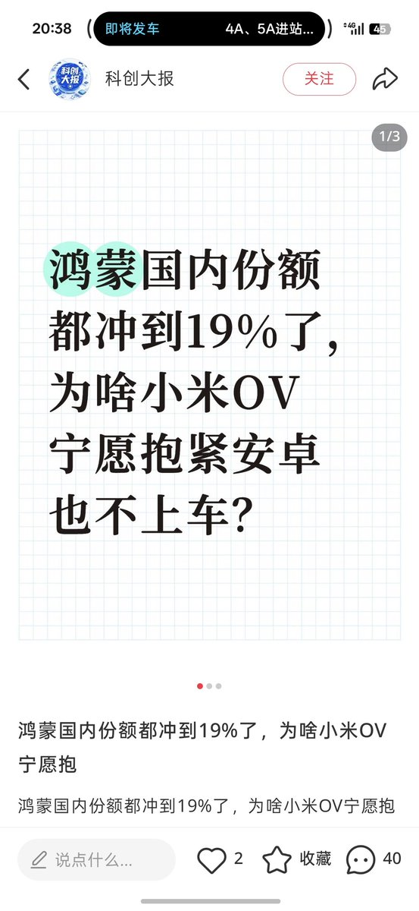

奶昔🥤
@realNyarime
其实这个道理就跟苹果的系统一样，虽然都是Darwin，但是iPhone上用的iOS和Mac上用的macOS都是商用碧源发行版，他连Aqua都不开源你觉得其他厂商会从头再来吗😂😂😂

江灵夏草
@jlxc2001
唉，现在小红书依然能刷到这种帖子😅😅😅
开源鸿蒙和鸿蒙 Next 本身就有很大的区别，手机上那套鸿蒙是华为自己的商用闭源发行版，怎么可能给其他厂商使用？真有厂商基于开源鸿蒙开发系统，几乎意味着所有软件生态都要重新建立，华为手机上的鸿蒙 App 本来就不能直接跑在开源鸿蒙上，需要去掉 HMS 以及 https://t.co/GsJLZo4gAH